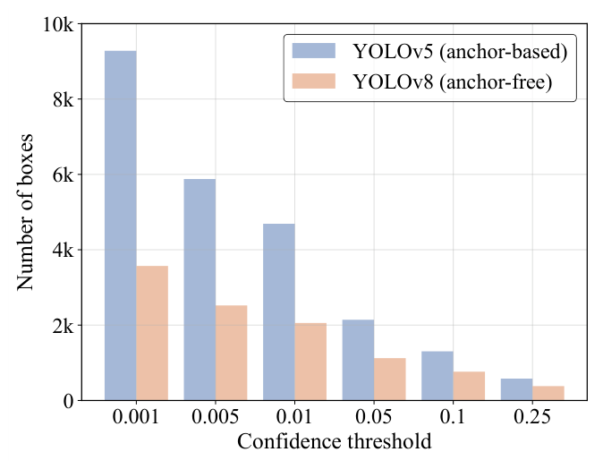
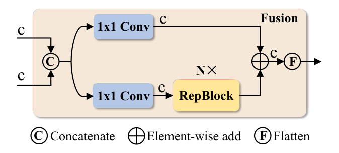
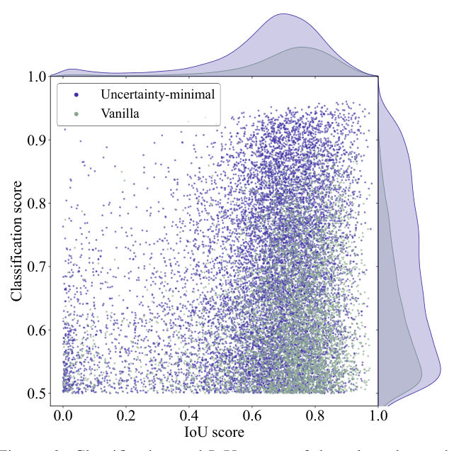
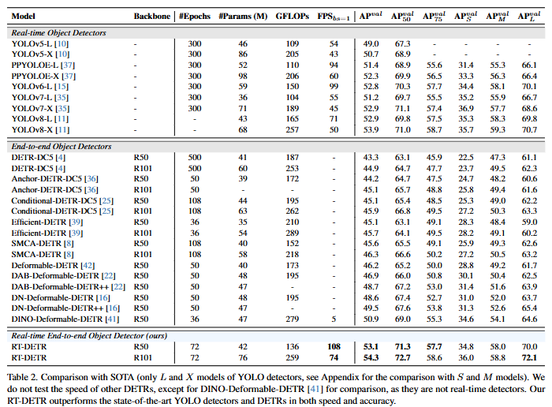

CVPR 2024
Oral
DETRs Beat YOLOs
on Real-time Object Detection
RT-DETR: 首个实时端到端目标检测器，在速度和精度上同时超越YOLO系列
Yian Zhao, Wenyu Lv, Shangliang Xu, et al.
Baidu Inc.
CVPR 2024
Abstract
论文摘要
"本文提出了 RT-DETR，首个实时端到端目标检测器，在速度和精度上同时超越了所有YOLO检测器。"
- 现有DETR模型因多尺度特征交互计算量大，难以满足实时性需求
- 提出高效混合编码器，解耦尺度内交互和跨尺度融合
- 设计不确定性最小查询选择，为解码器提供高质量初始查询
- RT-DETR-R50 在 COCO val2017 上达到 53.1% AP，T4 GPU上 108 FPS
- 支持灵活的速度-精度权衡，无需重新训练即可调整推理速度
Background
研究背景与动机
YOLO系列
实时检测主流方案
- 基于CNN的 anchor-based / anchor-free 检测器
- YOLOv5, YOLOv7, YOLOv8 等迭代演进
- 速度快但存在NMS后处理瓶颈
- 手工设计组件多，部署复杂
DETR系列
端到端检测新范式
- 基于Transformer的端到端检测
- 去除NMS，简化推理流程
- 但计算量大，速度远慢于YOLO
- 多尺度特征交互是主要瓶颈
核心问题：能否设计一个DETR架构，既保持端到端优势，又达到YOLO级别的实时速度？
Analysis
NMS后处理：YOLO的隐藏瓶颈

不同置信度阈值下YOLOv5和YOLOv8产生的检测框数量对比
01
Anchor-based 检测器
YOLOv5等模型产生大量冗余检测框，NMS需要按置信度排序并逐一比较IoU，计算复杂度高。
02
Anchor-free 检测器
YOLOv8等虽减少冗余，但仍需NMS过滤重叠框，且对超参数敏感，影响端到端延迟。
Method Overview
RT-DETR 架构总览
RT-DETR 整体架构：Backbone → Efficient Hybrid Encoder → Uncertainty-minimal Query Selection → Decoder & Head
B
Backbone
ResNet / HGNet
提取多尺度特征
→
E
Encoder
高效混合编码器
AIFI + CCFF
→
D
Decoder
Transformer Decoder
端到端预测
Encoder Design
高效混合编码器设计
核心洞察：尺度内交互与跨尺度融合的计算冗余不同，应解耦处理。
AIFI
尺度内特征交互
基于单尺度自注意力（AIFI），仅在最高分辨率特征图上执行，捕获尺度内语义关联，避免多尺度冗余计算。
CCFF
跨尺度特征融合
基于跨尺度特征融合模块（CCFF），通过高效的双向融合路径聚合多尺度信息，减少计算量。
编码器设计演进：从简单Concat到解耦的AIFI+CCFF架构
Module Detail
跨尺度特征融合 (CCFF)
CCFF模块采用RepBlock作为基本构建单元，结合1x1卷积和残差连接，实现高效的跨尺度信息流动。

CCFF模块结构：Concat → 1x1 Conv → RepBlock(N×) → Element-wise add → Flatten
关键设计：通过1x1卷积对齐通道维度，RepBlock实现可重参数化的高效特征变换，融合后通过Element-wise add聚合信息。
Query Selection
不确定性最小查询选择
传统DETR的查询选择仅考虑分类分数，忽略了定位质量，导致高分类分数但低IoU的查询被选入解码器。

不确定性最小查询选择 vs 传统方法：查询在IoU-分类分数空间中的分布
Vanilla
传统查询选择
仅按分类置信度选择Top-K查询，分类分数高但定位不准确的查询会误导解码器。
Ours
不确定性最小选择
同时考虑分类分数和IoU分数，选择不确定性最小的查询，提供更高质量的初始查询。
Experiments
实验设置
01
数据集
MS COCO train2017 (118K图像) 训练
COCO val2017 (5K图像) 评估
02
训练配置
AdamW优化器，Batch Size 32
训练6x schedule (72 epochs)
03
评测指标
COCO AP (平均精度)
端到端延迟 (TensorRT FP16, T4 GPU)
公平对比：所有模型均在相同硬件和TensorRT FP16环境下测试端到端延迟，包括前处理和后处理时间。
Results
主实验结果：与SOTA对比

Table 2. RT-DETR与实时检测器(YOLO系列)和端到端检测器(DETR系列)的全面对比
01
超越所有YOLO检测器
RT-DETR-R50在COCO val2017上达到53.1% AP，同时保持108 FPS的实时速度，精度超越YOLOv8-X (53.9% AP需71ms延迟)。
02
速度精度双优的端到端检测器
相比DINO-Deformable-DETR (49.0% AP, ~20 FPS)，RT-DETR-R50在精度提升4.1%的同时，速度提升5倍以上。
03
灵活的速度-精度权衡
RT-DETR-R101达到54.3% AP (74 FPS)，通过调整解码器层数可在不重新训练的情况下灵活调整推理速度。
Comparison
与现有DETR模型对比
RT-DETR不仅在速度上远超现有DETR模型，在精度上也达到了SOTA水平。
vs
DINO-Deformable-DETR
RT-DETR-R50 (53.1% AP, 108 FPS) vs DINO-R50 (49.0% AP, ~20 FPS)
精度+4.1%，速度提升5倍以上
vs
Deformable-DETR
RT-DETR-R50 vs Deformable-DETR-R50 (46.2% AP)
精度+6.9%，速度提升10倍以上
核心优势：RT-DETR是首个将DETR的端到端优势与YOLO级别实时性相结合的检测器，填补了该领域的空白。
Ablation
消融实验：验证各组件贡献
在RT-DETR-R50上逐一验证高效混合编码器和不确定性最小查询选择的贡献。
Baseline
📊
Deformable-DETR
46.2% AP
多尺度编码器
→
+ AIFI
⚡
尺度内交互
+1.8% AP
减少冗余计算
→
+ CCFF
🔗
跨尺度融合
+0.5% AP
高效信息流动
→
+ UMQS
🎯
查询选择
+0.4% AP
高质量初始查询
结论：每个组件均带来稳定的精度提升，组合后达到53.1% AP，同时保持实时速度。
Advantage
灵活的速度-精度权衡
RT-DETR支持无需重新训练的推理速度调整，通过改变解码器层数即可灵活控制速度。
R18
RT-DETR-R18
46.5% AP
217 FPS
超轻量级场景
R50
RT-DETR-R50
53.1% AP
108 FPS
均衡性能
R101
RT-DETR-R101
54.3% AP
73 FPS
高精度场景
独特优势：与YOLO需要训练不同尺度模型不同，RT-DETR只需调整解码器层数即可实现速度-精度权衡，大幅降低部署成本。
Conclusion
总结与贡献
- 提出 RT-DETR，首个实时端到端目标检测器，速度和精度同时超越YOLO系列
- 设计 高效混合编码器，通过解耦尺度内交互和跨尺度融合，大幅降低计算量
- 提出 不确定性最小查询选择，为解码器提供高质量的初始查询
- 支持 灵活的速度调整，无需重新训练即可适应不同实时性需求
- 为实时目标检测领域提供了 端到端的新范式，推动DETR在工业界的应用
"RT-DETR证明了DETR架构在实时检测场景下的可行性，开启了端到端实时目标检测的新篇章。"
感谢聆听
DETRs Beat YOLOs on Real-time Object Detection
RT-DETR: 实时端到端目标检测的新标杆
CVPR 2024 Oral
Baidu Inc.
Q & A